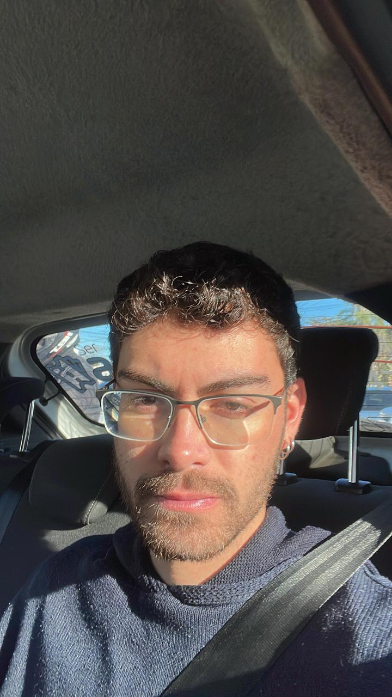
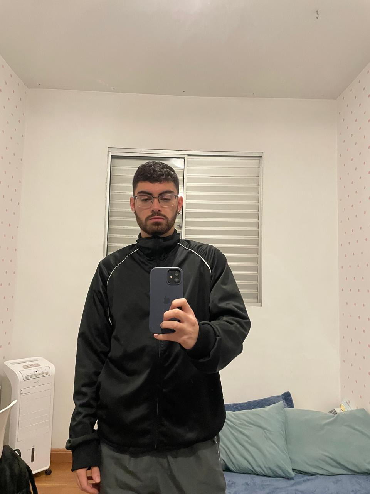

Sobre Mim
Meu nome é Lucas Ferreira Goularte, sou natural de Colatina/ES e atualmente moro em Belo Horizonte/MG. Hoje, vivo a empolgante transição entre o mundo das Ciências Biológicas e o universo dos dados. Minha base profissional foi construída nas Ciências Biológicas, área na qual sou formado e atuo, com muito orgulho, como professor nos anos finais do Ensino Fundamental e no Ensino Médio.
A sala de aula me proporcionou habilidades valiosas que vão além dos livros: a capacidade de comunicar conceitos complexos de forma acessível, a organização rigorosa de conteúdos e o desenvolvimento de um olhar analítico sobre o aprendizado humano. No entanto, minha curiosidade pelo funcionamento das máquinas e pelo potencial transformador da tecnologia sempre esteve presente. Foi essa motivação que me levou a ingressar na graduação de Ciência de Dados.
Atualmente no segundo período, estou mergulhado no estudo de linguagens fundamentais como Python, HTML, CSS e JavaScript, além de me aprofundar em estruturas de bancos de dados e arquitetura de sistemas.Acredito que ser um Cientista de Dados exige muito mais do que apenas código; exige a mentalidade investigativa que já exerço como biólogo e a clareza de exposição que pratico como educador. Meu objetivo é unir essas duas frentes: aplicar o rigor do método científico e a didática da sala de aula para extrair insights valiosos e gerar soluções tecnológicas que sejam verdadeiramente úteis e éticas.
Para o futuro, busco consolidar minha carreira em uma empresa de tecnologia onde eu possa atuar como Cientista de Dados. Sigo em constante evolução, acreditando que o aprendizado é um processo contínuo e que a inovação nasce do cruzamento de diferentes áreas do saber.
Nas horas vagas, mantenho minha mente ativa explorando as novas tendências da internet, acompanhando filmes de ficção científica e fantasia, jogando videogame e praticando atividades físicas para manter o equilíbrio entre o corpo e a mente.
E esse aqui sou eu!

